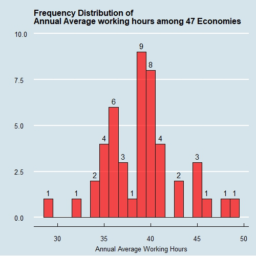

class: center, middle, inverse, title-slide .title[ # Assessing Relationship of Work & Happiness ] .author[ ### Tan Wei Kiat ] .date[ ### 24 October 2024 ] --- <style> /* Globally change the font size of all figure captions */ figcaption { font-size: 12px; /* Adjust this value to change the size */ text-align: center; /* Center-align all captions */ } </style> ### Contents * **Synopsis** * **Introduction** * **Terms Definition** * **Results** * **Does Economic environment affect work & happiness?** * **Long working hours does not mean poor happiness** * **Working conditions matter towards happiness** * **Conclusion** --- ### Synopsis * Long working hours are negatively associated to stress, depression, and low subjective well-being. In extreme cases, it results in death by overwork or known as “gwarosa” and “karoshi,” in South Korea and Japan. * However, not every economy shares the same narrative. Some economies achieve better happiness results despite working for long hours. Could better working conditions for workers justify working longer? * Could an economy with a better GDP per capita be more advantageous starting point for people and make them happier to justify working longer? Lastly, is happiness dependent on the region economies are located due to differences in working culture? * This report seeks to deliver key insights that influence the relationship between work and happiness. --- ### Introduction The relationship between work and happiness is not significant to a large extent. First, People living in Economies with higher GDP per capita tend to be happier and have a more positive outlook in life. Second, not all hardworking countries are less happy. However, improved working conditions can help to improve happiness. ### Data Sources * Data provided for this report consists of 3 data sources. The first contains data on average weekly hours worked among countries in the OECD (Organisation for Economic Co-operation and Development) and for Singapore. * The second dataset contains additional data about work conditions for all countries with available data and contains aggregated survey responses (from each country) from the World Bank Working Hours database. * The third dataset contains data about happiness taken from the World Happiness Report 2024. --- class: center, middle, inverse ## Definitions --- ### Term Definitions * In the happiness dataset, Life Ladder refers to think of their best possible life, 10 being the best and 0 for the worst. * Log GDP per capita is the log-transformed variable of the GDP per capita as a measure of economic development. * Positive Affect measures positive emotions on a scale of 0 to 1 whereby the higher the score, the more positive the emotion. * Negative Affect measures negative emotions on a scale of 0 to 1 whereby the higher the score, the more negative the emotion. --- class: center, middle, inverse ## Results --- <style> /* Flexbox container to create two-column layout */ .two-column { display: flex; /* Use Flexbox for layout */ justify-content: space-between; /* Distribute space between columns */ align-items: flex-start; /* Align items at the top */ } /* Left column for the image */ .left-column { width: 60%; /* Set image section width to 60% */ text-align: left; /* Keep image aligned to the left */ } /* Right column for the text */ .right-column { width: 35%; /* Set text section width to 35% */ margin-left: 20px; /* Add margin between the image and text */ } /* Add spacing between bullet points */ .right-column ul li { margin-bottom: 10px; /* Adjust the spacing between bullet points */ } </style> #### Overview <div class="two-column"> <div class="left-column"> <!-- Your image and caption --> <figure style="text-align: left;">  <figcaption style="text-align: center;">Figure: Distribution of working hours among the 47 Economies</figcaption> </figure> </div> <div class="right-column"> <!-- Your body text in point form with spacing --> <ul> <li>47 Economies participated in this analysis, in which 44 are from OECD and the other is Singapore, which is not part of OECD.</li> <li>Annual average hours range from the lowest as less than 30 hours to almost 50 hours.</li> </ul> </div> </div> --- <style> /* Flexbox container to create two-column layout */ .two-column { display: flex; /* Use Flexbox for layout */ justify-content: space-between; /* Distribute space between columns */ align-items: flex-start; /* Align items at the top */ } /* Left column for the image */ .left-column { width: 60%; /* Set image section width to 60% */ text-align: left; /* Keep image aligned to the left */ } /* Right column for the text */ .right-column { width: 35%; /* Set text section width to 35% */ margin-left: 20px; /* Add margin between the image and text */ } /* Add spacing between bullet points */ .right-column ul li { margin-bottom: 10px; /* Adjust the spacing between bullet points */ } </style> #### Overview <div class="two-column"> <div class="left-column"> <!-- Your image and caption --> <figure style="text-align: left;"> <img src="images/Rplot1.jpeg" width="600px"> <figcaption style="text-align: left;">Figure 1: Log GDP per capita, Positive Emotions and Annual Average Hours overtime</figcaption> </figure> </div> <div class="right-column"> <!-- Your body text in point form with spacing --> <ul> <li>Luxemburg has the highest GDP per capita among the 47 participant economies, achieving it with working hours less than 40.</li> <li>Majority of the countries achieved excellent and good category rating for Positive emotions with minor achieving bad category</li> <li>Size of the dots in Figure 1 & 2 is dependent on the Annual Average hours. Longer hours imply bigger dots.</li> <li>Different colours indicate different positive emotions categories.</li> </ul> </div> </div> --- <style> /* Flexbox container to create two-column layout */ .two-column { display: flex; /* Use Flexbox for layout */ justify-content: space-between; /* Distribute space between columns */ align-items: flex-start; /* Align items at the top */ } /* Left column for the image */ .left-column { width: 60%; /* Set image section width to 60% */ text-align: left; /* Keep image aligned to the left */ } /* Right column for the text */ .right-column { width: 35%; /* Set text section width to 35% */ margin-left: 20px; /* Add margin between the image and text */ } /* Add spacing between bullet points */ .right-column ul li { margin-bottom: 10px; /* Adjust the spacing between bullet points */ } </style> #### Overview <div class="two-column"> <div class="left-column"> <!-- Your image and caption --> <figure style="text-align: left;"> <img src="images/Rplot2.jpeg" width="600px"> <figcaption style="text-align: left;">Figure 2: Log GDP per capita, Negative Emotions and Annual Average Hours overtime</figcaption> </figure> </div> <div class="right-column"> <!-- Your body text in point form with spacing --> <ul> <li>For figure 2, it features the same chart except colour. The colour of the points is dependent on the negative emotions category.</li> <li>Luxemburg continues achieving the highest GDP per capita among the 47 participant economies, achieving it with working hours less than 40.</li> <li>Majority of the countries achieved excellent and good category rating for Negative emotions</li> </ul> </div> </div> --- class: center, middle, inverse ## Heat Maps of Economies based on Negative Emotions rating --- <style> /* Flexbox container to create two-column layout */ .two-column { display: flex; /* Use Flexbox for layout */ justify-content: space-between; /* Distribute space between columns */ align-items: flex-start; /* Align items at the top */ } /* Left column for the image */ .left-column { width: 60%; /* Set image section width to 60% */ text-align: left; /* Keep image aligned to the left */ } /* Right column for the text */ .right-column { width: 35%; /* Set text section width to 35% */ margin-left: 20px; /* Add margin between the image and text */ } /* Add spacing between bullet points */ .right-column ul li { margin-bottom: 10px; /* Adjust the spacing between bullet points */ } </style> #### Negative Emotions Heatmap <div class="two-column"> <div class="left-column"> <!-- Your image and caption --> <figure style="text-align: left;"> <img src="images/Rplot3.jpeg" width="500px"> <figcaption style="text-align: left;">Figure 4: heat map of negative effect for Singapore and OECD Economies from 2013-2015</figcaption> </figure> </div> <div class="right-column"> <!-- Your body text in point form with spacing --> <ul> <li>Figure 4 shows heat map of the economies in the data set from 2013 to 2015 for negative emotions.</li> <li>Colour spectrum ranges from green to red for negative affect values, whereby the higher value will produce a red colour and vice versa.</li> <li>Grey colour indicates NA due to lack of data.</li> <li>Heat maps show that most economies fare well for their negative emotions from 2013 to 2015.</li> <li>Singapore performed relatively well for achieving low negativity rating than most of its peers.</li> <li>Notable mention for high negativity is Greece in 2013.</li> </ul> </div> </div> --- <style> /* Flexbox container to create two-column layout */ .two-column { display: flex; /* Use Flexbox for layout */ justify-content: space-between; /* Distribute space between columns */ align-items: flex-start; /* Align items at the top */ } /* Left column for the image */ .left-column { width: 60%; /* Set image section width to 60% */ text-align: left; /* Keep image aligned to the left */ } /* Right column for the text */ .right-column { width: 35%; /* Set text section width to 35% */ margin-left: 20px; /* Add margin between the image and text */ } /* Add spacing between bullet points */ .right-column ul li { margin-bottom: 10px; /* Adjust the spacing between bullet points */ } </style> #### Negative Emotions Heatmap <div class="two-column"> <div class="left-column"> <!-- Your image and caption --> <figure style="text-align: left;"> <img src="images/Rplot3.jpeg" width="500px"> <figcaption style="text-align: left;">Figure 4: heat map of negative effect for Singapore and OECD Economies from 2013-2015</figcaption> </figure> </div> <div class="right-column"> <!-- Your body text in point form with spacing --> <ul> <li>For Greece unhappiness in Figure 4, Greece all time high unhappiness can be attributed to its government debt crisis, starting from the aftermath of the Great Recession. </li> <li>Complicating this was Greece Government's poor management of its spending, worsening the deficit.</li> <li>Greece lacked transparency in producing economic and financial, producing highly questionable data.</li> <li>Greece was also part of the Eurozone which meant it cannot make its own decision-making for adjusting its monetary policy</li> </ul> </div> </div> --- <style> /* Flexbox container to create two-column layout */ .two-column { display: flex; /* Use Flexbox for layout */ justify-content: space-between; /* Distribute space between columns */ align-items: flex-start; /* Align items at the top */ } /* Left column for the image */ .left-column { width: 60%; /* Set image section width to 60% */ text-align: left; /* Keep image aligned to the left */ } /* Right column for the text */ .right-column { width: 35%; /* Set text section width to 35% */ margin-left: 20px; /* Add margin between the image and text */ } /* Add spacing between bullet points */ .right-column ul li { margin-bottom: 10px; /* Adjust the spacing between bullet points */ } </style> #### Negative Emotions Heatmap <div class="two-column"> <div class="left-column"> <!-- Your image and caption --> <figure style="text-align: left;"> <img src="images/Rplot3.jpeg" width="500px"> <figcaption style="text-align: left;">Figure 4: heat map of negative effect for Singapore and OECD Economies from 2013-2015</figcaption> </figure> </div> <div class="right-column"> <!-- Your body text in point form with spacing --> <ul> <li>As the crisis spirals out of control, Greece was forced to engage in multiple bailout programmes and adopt tough austerity measures. <li>Many income levels declined, standards of living fell and unemployment levels rose.</li> <li>Traditional dominant 2-party system ceased ending single government rule and transforming it to coalition government rule.</li> </ul> </div> </div> --- <style> /* Flexbox container to create two-column layout */ .two-column { display: flex; /* Use Flexbox for layout */ justify-content: space-between; /* Distribute space between columns */ align-items: flex-start; /* Align items at the top */ } /* Left column for the image */ .left-column { width: 60%; /* Set image section width to 60% */ text-align: left; /* Keep image aligned to the left */ } /* Right column for the text */ .right-column { width: 35%; /* Set text section width to 35% */ margin-left: 20px; /* Add margin between the image and text */ } /* Add spacing between bullet points */ .right-column ul li { margin-bottom: 10px; /* Adjust the spacing between bullet points */ } </style> #### Negative Emotions Heatmap <div class="two-column"> <div class="left-column"> <!-- Your image and caption --> <figure style="text-align: left;"> <img src="images/Rplot4.jpeg" width="520px"> <figcaption style="text-align: left;">Figure 4: Heat map of negative effect for Singapore and OECD Economies from 2016-2017</figcaption> </figure> </div> <div class="right-column"> <!-- Your body text in point form with spacing --> <ul> <li>Figure 4 shows a heat map of the economies in the data set from 2016 to 2017 for negative emotions.</li> <li>Colour spectrum in the Heat maps show that most economies have higher negative emotions from 2016 and 2017 than 2013 to 2015.</li> <li>Singapore continues showing consistency for low negative emotions rating with slight increase of negativity in 2017.</li> <li>United Kingdom (UK) has highest negative emotion rating in the graph in 2016, possibly attributed to Brexit referendum. A divisive issue economically, politically and socially.</li> </ul> </div> </div> --- <style> /* Flexbox container to create two-column layout */ .two-column { display: flex; /* Use Flexbox for layout */ justify-content: space-between; /* Distribute space between columns */ align-items: flex-start; /* Align items at the top */ } /* Left column for the image */ .left-column { width: 60%; /* Set image section width to 60% */ text-align: left; /* Keep image aligned to the left */ } /* Right column for the text */ .right-column { width: 35%; /* Set text section width to 35% */ margin-left: 20px; /* Add margin between the image and text */ } /* Add spacing between bullet points */ .right-column ul li { margin-bottom: 10px; /* Adjust the spacing between bullet points */ } </style> #### Negative Emotions Heatmap <div class="two-column"> <div class="left-column"> <!-- Your image and caption --> <figure style="text-align: left;"> <img src="images/Rplot4.jpeg" width="520px"> <figcaption style="text-align: left;">Figure 4: Heat map of negative effect for Singapore and OECD Economies from 2016-2017</figcaption> </figure> </div> <div class="right-column"> <!-- Your body text in point form with spacing --> <ul> <li>For UK, Brexit in 2016 was a national controversial issue. It saw UK's exit from the European Union (EU), overseen by multiple Prime ministers from David Cameroon to Boris Johnson.</li> <li>UK and many other European countries believed Europe Regionalisation will promote better peace, citizen well-being, economic prosperity and security.</li> <li>However, many Brits felt being an EU member made them worse off and felt it would be better to leave than remain.</li> <li>This was particularly following mass immigration from conflicts zones in Arab regions to Europe, raising security concerns among people and nationalism among conservatives.</li> </ul> </div> </div> --- <style> /* Flexbox container to create two-column layout */ .two-column { display: flex; /* Use Flexbox for layout */ justify-content: space-between; /* Distribute space between columns */ align-items: flex-start; /* Align items at the top */ } /* Left column for the image */ .left-column { width: 60%; /* Set image section width to 60% */ text-align: left; /* Keep image aligned to the left */ } /* Right column for the text */ .right-column { width: 35%; /* Set text section width to 35% */ margin-left: 20px; /* Add margin between the image and text */ } /* Add spacing between bullet points */ .right-column ul li { margin-bottom: 10px; /* Adjust the spacing between bullet points */ } </style> #### Negative Emotions Heatmap <div class="two-column"> <div class="left-column"> <!-- Your image and caption --> <figure style="text-align: left;"> <img src="images/Rplot5.jpeg" width="500px"> <figcaption style="text-align: left;">Figure 5: Heat map of negative effect for Singapore and OECD Economies from 2018-2019</figcaption> </figure> </div> <div class="right-column"> <!-- Your body text in point form with spacing --> <ul> <li>Figure 5 shows a heat map of the economies in the data set from 2018 to 2019 for negative emotions.</li> <li>Colour spectrum in the Heat maps show slight improvements for most economies for negative emotions from 2018 and 2019 than 2016 to 2017.</li> <li>Singapore saw improvements and achieved a green colour rating for negative emotions rating again in 2018, compared to 2017 before dropping in 2019.</li> <li>Notable mention is Italy with highest negative emotion rating in the graph in 2018.</li> </ul> </div> </div> --- <style> /* Flexbox container to create two-column layout */ .two-column { display: flex; /* Use Flexbox for layout */ justify-content: space-between; /* Distribute space between columns */ align-items: flex-start; /* Align items at the top */ } /* Left column for the image */ .left-column { width: 60%; /* Set image section width to 60% */ text-align: left; /* Keep image aligned to the left */ } /* Right column for the text */ .right-column { width: 35%; /* Set text section width to 35% */ margin-left: 20px; /* Add margin between the image and text */ } /* Add spacing between bullet points */ .right-column ul li { margin-bottom: 10px; /* Adjust the spacing between bullet points */ } </style> #### Negative Emotions Heatmap <div class="two-column"> <div class="left-column"> <!-- Your image and caption --> <figure style="text-align: left;"> <img src="images/Rplot5.jpeg" width="500px"> <figcaption style="text-align: left;">Figure 5: Heat map of negative effect for Singapore and OECD Economies from 2018-2019</figcaption> </figure> </div> <div class="right-column"> <!-- Your body text in point form with spacing --> <ul> <li> For Italy, it was largely attributed to its political crisis of forming a stable government and economic recession from its poor economic growth.</li> <li>Similar to Greece, it was linked to aftermath of 2008 Great Financial Crisis. </li> <li>It has long struggled with economic stagnation, stemming from low GDP growth as it loses competitive edge in the global economy, making it harder to service public debt without undertaking austerity measures.</li> <li>Complicating matters was failure to produce a stable government to handle Italy's economic issues, resulting in hung parliament, a country without proper government.</li> </ul> </div> </div> --- class: center, middle, inverse ## Heat Maps of Economies based on Positive Emotions rating --- <style> /* Flexbox container to create two-column layout */ .two-column { display: flex; /* Use Flexbox for layout */ justify-content: space-between; /* Distribute space between columns */ align-items: flex-start; /* Align items at the top */ } /* Left column for the image */ .left-column { width: 60%; /* Set image section width to 60% */ text-align: left; /* Keep image aligned to the left */ } /* Right column for the text */ .right-column { width: 35%; /* Set text section width to 35% */ margin-left: 20px; /* Add margin between the image and text */ } /* Add spacing between bullet points */ .right-column ul li { margin-bottom: 10px; /* Adjust the spacing between bullet points */ } </style> #### Positive Emotions Heat Map <div class="two-column"> <div class="left-column"> <!-- Your image and caption --> <figure style="text-align: left;"> <img src="images/Rplot6.jpeg" width="500px"> <figcaption style="text-align: left;">Figure 6: Heat map of Positive effect for Singapore and OECD Economies from 2013-2015</figcaption> </figure> </div> <div class="right-column"> <!-- Your body text in point form with spacing --> <ul> <li>Figure 6 shows a heat map of the economies in the data set from 2013 to 2015 for Positive Emotions.</li> <li>Colour spectrum in the Heat maps starts from red for poor positive emotions rating to green for higher positive emotions rating. Grey indicates NA due to absence of data.</li> <li>Majority out of 47 economies fared well for positive emotions rating [remember to insert reason].</li> <li>Notable mention is Turkey which has lowest positive emotion rating in the graph starting from 2014 in the heat map from 2013 to 2015.</li> </ul> </div> </div> --- <style> /* Flexbox container to create two-column layout */ .two-column { display: flex; /* Use Flexbox for layout */ justify-content: space-between; /* Distribute space between columns */ align-items: flex-start; /* Align items at the top */ } /* Left column for the image */ .left-column { width: 60%; /* Set image section width to 60% */ text-align: left; /* Keep image aligned to the left */ } /* Right column for the text */ .right-column { width: 35%; /* Set text section width to 35% */ margin-left: 20px; /* Add margin between the image and text */ } /* Add spacing between bullet points */ .right-column ul li { margin-bottom: 10px; /* Adjust the spacing between bullet points */ } </style> #### Positive Emotions Heat Map <div class="two-column"> <div class="left-column"> <!-- Your image and caption --> <figure style="text-align: left;"> <img src="images/Rplot7.jpeg" width="460px"> <figcaption style="text-align: left;">Figure 7: Heat map of Positive effect for Singapore and OECD Economies from 2016-2017</figcaption> </figure> </div> <div class="right-column"> <!-- Your body text in point form with spacing --> <ul> <li>Figure 7 shows a heat map of the economies in the data set from 2016 to 2017 for Positive emotions.</li> <li>Colour spectrum in the Heat maps show Turkey continuing to achieve lowest positive emotions rating among the 47 economies.</li> <li>North Macedonia saw a drop of its positive emotions rating in 2017 compared to 2016.</li> </ul> </div> </div> --- <style> /* Flexbox container to create two-column layout */ .two-column { display: flex; /* Use Flexbox for layout */ justify-content: space-between; /* Distribute space between columns */ align-items: flex-start; /* Align items at the top */ } /* Left column for the image */ .left-column { width: 60%; /* Set image section width to 60% */ text-align: left; /* Keep image aligned to the left */ } /* Right column for the text */ .right-column { width: 35%; /* Set text section width to 35% */ margin-left: 20px; /* Add margin between the image and text */ } /* Add spacing between bullet points */ .right-column ul li { margin-bottom: 10px; /* Adjust the spacing between bullet points */ } </style> #### Positive Emotions Heat Map <div class="two-column"> <div class="left-column"> <!-- Your image and caption --> <figure style="text-align: left;"> <img src="images/Rplot8.jpeg" width="470px"> <figcaption style="text-align: left;">Figure 8: Heat map of Positive effect for Singapore and OECD Economies from 2018-2019</figcaption> </figure> </div> <div class="right-column"> <!-- Your body text in point form with spacing --> <ul> <li>Figure 8 shows a heat map of the economies in the data set from 2018 to 2019 for Positive emotions.</li> <li>Turkey continues showing persistence in attaining low positive emotions rating since 2014, a worrying trend of concern.</li> </ul> </div> </div> --- #### Case of Turkey * There are a few possible reasons. First, weakening of Turkey's currency Lira as Erdogan, known for his unorthodox stance in tackling inflation by not raising interest rates strongly rejected moves by Turkey's Central Bank. * Second possible explanation is social unrest in Turkey over Syria. Anti-government protests in Turkey claimed more than 30 lives. * Third, Crackdown of the media's freedom of expression and political opponents following a series of violence that rocked the Country in 2015. Mainstream and social media platforms were not spared from this crackdown as Turkey under President Erdogan becomes increasingly authoritative. * Fourth, in 2016, a major coup was attempted by a faction of the Turkish Armed forces to overthrow the Turkish Government, including President Erdogan but failed. * Lastly, Turkey suffers a currency economic crisis, plunging in value from high inflation, widening current account deficit from debt in public and private sector and lastly political instability in Turkey and with its global partners. --- class: center, middle, inverse ## Does Economic Environment affect Work & Happiness? --- <style> /* Flexbox container to create two-column layout */ .two-column { display: flex; /* Use Flexbox for layout */ justify-content: space-between; /* Distribute space between columns */ align-items: flex-start; /* Align items at the top */ } /* Left column for the image */ .left-column { width: 60%; /* Set image section width to 60% */ text-align: left; /* Keep image aligned to the left */ } /* Right column for the text */ .right-column { width: 35%; /* Set text section width to 35% */ margin-left: 20px; /* Add margin between the image and text */ } /* Add spacing between bullet points */ .right-column ul li { margin-bottom: 10px; /* Adjust the spacing between bullet points */ } </style> #### Insight 1: Economic Environment affects work & Happiness <div class="two-column"> <div class="left-column"> <!-- Your image and caption --> <figure style="text-align: left;"> <img src="images/Rplot9.jpeg" width="600px"> <figcaption style="text-align: centre;">Figure 9: Log GDP per Capita against annual average working hours</figcaption> </figure> </div> <div class="right-column"> <!-- Your body text in point form with spacing --> <ul> <li>Figure 9 shows Scatter plot of Log GDP per Capita against Annual Average Hours for OECD countries & Singapore. From figure 9, there are 5 data clusters.</li> <li>First cluster is Netherlands with less than 30 annual average working hours.</li> <li>Second is the biggest cluster containing Denmark, Ireland, Luxemburg, Chile and majority of data points from above 30 hours to less than 45 hours.</li> <li>Third cluster contains points from Colombia. Fourth is points from Turkey and last cluster is Singapore</li> </ul> </div> </div> --- <style> /* Flexbox container to create two-column layout */ .two-column { display: flex; /* Use Flexbox for layout */ justify-content: space-between; /* Distribute space between columns */ align-items: flex-start; /* Align items at the top */ } /* Left column for the image */ .left-column { width: 60%; /* Set image section width to 60% */ text-align: left; /* Keep image aligned to the left */ } /* Right column for the text */ .right-column { width: 35%; /* Set text section width to 35% */ margin-left: 20px; /* Add margin between the image and text */ } /* Add spacing between bullet points */ .right-column ul li { margin-bottom: 10px; /* Adjust the spacing between bullet points */ } </style> #### Insight 1: Economic Environment affects work & Happiness <div class="two-column"> <div class="left-column"> <!-- Your image and caption --> <figure style="text-align: left;"> <img src="images/Rplot9.jpeg" width="600px"> <figcaption style="text-align: centre;">Figure 9: Log GDP per Capita against annual average working hours</figcaption> </figure> </div> <div class="right-column"> <!-- Your body text in point form with spacing --> <ul> <li>Netherlands is notable for having the lowest annual average working hours but still achieve higher log GDP per capita than others..</li> <li>On the other side, Singapore achieves higher log GDP per capita at a cost of much longer working hours above 40.</li> <li>At the extreme end, Turkey and Colombia worked a range of more than 45 hours but less than 50 and achieve lower log GDP per capita than Netherlands and Singapore.</li> </ul> </div> </div> --- <style> /* Flexbox container to create two-column layout */ .two-column { display: flex; /* Use Flexbox for layout */ justify-content: space-between; /* Distribute space between columns */ align-items: flex-start; /* Align items at the top */ } /* Left column for the image */ .left-column { width: 60%; /* Set image section width to 60% */ text-align: left; /* Keep image aligned to the left */ } /* Right column for the text */ .right-column { width: 35%; /* Set text section width to 35% */ margin-left: 20px; /* Add margin between the image and text */ } /* Add spacing between bullet points */ .right-column ul li { margin-bottom: 10px; /* Adjust the spacing between bullet points */ } </style> #### Insight 1: Economic Environment affects work & Happiness <div class="two-column"> <div class="left-column"> <!-- Your image and caption --> <figure style="text-align: centre;"> <img src="images/Rplot10.jpeg" width="600px"> <figcaption style="text-align: centre;">Figure 10: Selected countries line chart of Log GDP per capita & Annual Average hours overtime</figcaption> </figure> </div> <div class="right-column"> <!-- Your body text in point form with spacing --> <ul> <li>Selecting random 8 countries with annual average hours ranging from less than 30 to close to 50, a line chart is plotted with Log GDP per capita overtime in figure 10.</li> <li>Size of points is dependent on annual average hours.</li> </ul> </div> </div> --- <style> /* Flexbox container to create two-column layout */ .two-column { display: flex; /* Use Flexbox for layout */ justify-content: space-between; /* Distribute space between columns */ align-items: flex-start; /* Align items at the top */ } /* Left column for the image */ .left-column { width: 60%; /* Set image section width to 60% */ text-align: left; /* Keep image aligned to the left */ } /* Right column for the text */ .right-column { width: 35%; /* Set text section width to 35% */ margin-left: 20px; /* Add margin between the image and text */ } /* Add spacing between bullet points */ .right-column ul li { margin-bottom: 10px; /* Adjust the spacing between bullet points */ } </style> #### Insight 1: Economic Environment affects work & Happiness <div class="two-column"> <div class="left-column"> <!-- Your image and caption --> <figure style="text-align: left;"> <img src="images/Rplot10.jpeg" width="600px"> <figcaption style="text-align: centre;">Figure 10: Selected countries line chart of Log GDP per capita & Annual Average hours overtime</figcaption> </figure> </div> <div class="right-column"> <!-- Your body text in point form with spacing --> <ul> <li>Countries with high log GDP per capita, most of them have working hours less than 40 and are from Europe and Scandinavian regions, only Singapore is an exception from South-East Asia region.</li> <li>On the other side, Singapore achieves higher log GDP per capita at a cost of much longer working hours above 40.</li> <li>Turkey from Middle East region, Chile and Colombia from Latin America have longer working hours than countries like Luxemburg or Ireland and a much lower log GDP per capita.</li> </ul> </div> </div> --- <style> /* Flexbox container to create two-column layout */ .two-column { display: flex; /* Use Flexbox for layout */ justify-content: space-between; /* Distribute space between columns */ align-items: flex-start; /* Align items at the top */ } /* Left column for the image */ .left-column { width: 60%; /* Set image section width to 60% */ text-align: left; /* Keep image aligned to the left */ } /* Right column for the text */ .right-column { width: 35%; /* Set text section width to 35% */ margin-left: 20px; /* Add margin between the image and text */ } /* Add spacing between bullet points */ .right-column ul li { margin-bottom: 10px; /* Adjust the spacing between bullet points */ } </style> #### Insight 1: Economic Environment affects work & Happiness <div class="two-column"> <div class="left-column"> <!-- Your image and caption --> <figure style="text-align: left;"> <img src="images/Rplot11.jpeg" width="600px"> <figcaption style="text-align: centre;">Figure 11: Log GDP per Capita against Life Ladder</figcaption> </figure> </div> <div class="right-column"> <!-- Your body text in point form with spacing --> <ul> <li>In figure 11, it shows a scatter plot where Log GDP per Capita is plotted against Life Ladder and a positive correlation can be spotted.</li> <li>The trend is the higher log GDP per capita, the better life ladder ratings.</li> <li>South Africa was the lowest in 2013 while Luxemburg in 2019 and Finland in 2018 for highest log GDP per capita and life ladder respectively.</li> </ul> </div> </div> --- <style> /* Flexbox container to create two-column layout */ .two-column { display: flex; /* Use Flexbox for layout */ justify-content: space-between; /* Distribute space between columns */ align-items: flex-start; /* Align items at the top */ } /* Left column for the image */ .left-column { width: 60%; /* Set image section width to 60% */ text-align: left; /* Keep image aligned to the left */ } /* Right column for the text */ .right-column { width: 35%; /* Set text section width to 35% */ margin-left: 20px; /* Add margin between the image and text */ } /* Add spacing between bullet points */ .right-column ul li { margin-bottom: 10px; /* Adjust the spacing between bullet points */ } </style> #### Insight 1: Economic Environment affects work & Happiness <div class="two-column"> <div class="left-column"> <!-- Your image and caption --> <figure style="text-align: centre;"> <img src="images/Rplot12.jpeg" width="470px"> <figcaption style="text-align: centre;">Figure 12: Log GDP per Capita against Life Ladder</figcaption> </figure> </div> <div class="right-column"> <!-- Your body text in point form with spacing --> <ul> <li>In figure 12, it shows Log GDP per Capita of top and bottom 3 economies over 2013 to 2019 where each point's shape is based on their Positive Affect Category assigned</li> <li>From figure 12, top 3 log GDP per capita countries achieved excellent and good positive affect category ratings.</li> <li>Interestingly, the bottom 3 log GDP per capita countries also achieved excellent and good positive categorical ratings.</li> </ul> </div> </div> --- <style> /* Flexbox container to create two-column layout */ .two-column { display: flex; /* Use Flexbox for layout */ justify-content: space-between; /* Distribute space between columns */ align-items: flex-start; /* Align items at the top */ } /* Left column for the image */ .left-column { width: 60%; /* Set image section width to 60% */ text-align: left; /* Keep image aligned to the left */ } /* Right column for the text */ .right-column { width: 35%; /* Set text section width to 35% */ margin-left: 20px; /* Add margin between the image and text */ } /* Add spacing between bullet points */ .right-column ul li { margin-bottom: 10px; /* Adjust the spacing between bullet points */ } </style> #### Insight 1: Economic Environment affects work & Happiness <div class="two-column"> <div class="left-column"> <!-- Your image and caption --> <figure style="text-align: left;"> <img src="images/Rplot12.jpeg" width="470px"> <figcaption style="text-align: centre;">Figure 12: Log GDP per Capita against Life Ladder</figcaption> </figure> </div> <div class="right-column"> <!-- Your body text in point form with spacing --> <ul> <li>Based on these observations in figure 12, This indicates that people from different countries have their unique interpretations for what makes them happy.</li> <li>From figure 12, top 3 log GDP per capita countries achieved excellent and good positive affect category ratings.</li> <li>It could be better life opportunities or be contented with simple things in life like peace and stability, particularly in countries with a dark history of conflicts like Colombia and South Africa.</li> </ul> </div> </div> --- <style> /* Flexbox container to create two-column layout */ .two-column { display: flex; /* Use Flexbox for layout */ justify-content: space-between; /* Distribute space between columns */ align-items: flex-start; /* Align items at the top */ } /* Left column for the image */ .left-column { width: 60%; /* Set image section width to 60% */ text-align: left; /* Keep image aligned to the left */ } /* Right column for the text */ .right-column { width: 35%; /* Set text section width to 35% */ margin-left: 20px; /* Add margin between the image and text */ } /* Add spacing between bullet points */ .right-column ul li { margin-bottom: 10px; /* Adjust the spacing between bullet points */ } </style> #### Insight 1: Economic Environment affects work & Happiness <div class="two-column"> <div class="left-column"> <!-- Your image and caption --> <figure style="text-align: left;"> <img src="images/Rplot12.jpeg" width="470px"> <figcaption style="text-align: centre;">Figure 12: Log GDP per Capita against Life Ladder</figcaption> </figure> </div> <div class="right-column"> <!-- Your body text in point form with spacing --> <ul> <li>In figure 12, it shows Log GDP per Capita of top and bottom 3 economies over 2013 to 2019 where each point's shape is based on their Positive Affect Category assigned</li> <li>From figure 12, top 3 log GDP per capita countries achieved excellent and good positive affect category ratings.</li> <li>Interestingly, the bottom 3 log GDP per capita countries also achieved excellent and good positive categorical ratings.</li> </ul> </div> </div> --- <style> /* Flexbox container to create two-column layout */ .two-column { display: flex; /* Use Flexbox for layout */ justify-content: space-between; /* Distribute space between columns */ align-items: flex-start; /* Align items at the top */ } /* Left column for the image */ .left-column { width: 60%; /* Set image section width to 60% */ text-align: left; /* Keep image aligned to the left */ } /* Right column for the text */ .right-column { width: 35%; /* Set text section width to 35% */ margin-left: 20px; /* Add margin between the image and text */ } /* Add spacing between bullet points */ .right-column ul li { margin-bottom: 10px; /* Adjust the spacing between bullet points */ } </style> #### Insight 1: Economic Environment affects work & Happiness <div class="two-column"> <div class="left-column"> <!-- Your image and caption --> <figure style="text-align: left;"> <img src="images/Rplot13.jpeg" width="470px"> <figcaption style="text-align: centre;">Figure 13: Log GDP per Capita against Life Ladder</figcaption> </figure> </div> <div class="right-column"> <!-- Your body text in point form with spacing --> <ul> <li>Based on these observations in figure 12, This indicates that people from different countries have their unique interpretations for what makes them happy.</li> <li>From figure 12, top 3 log GDP per capita countries achieved excellent and good positive affect category ratings.</li> <li>It could be better life opportunities or be contented with simple things in life like peace and stability, particularly in countries with a dark history of conflicts like Colombia and South Africa.</li> </ul> </div> </div> --- <style> /* Flexbox container to create two-column layout */ .two-column { display: flex; /* Use Flexbox for layout */ justify-content: space-between; /* Distribute space between columns */ align-items: flex-start; /* Align items at the top */ } /* Left column for the image */ .left-column { width: 60%; /* Set image section width to 60% */ text-align: left; /* Keep image aligned to the left */ } /* Right column for the text */ .right-column { width: 35%; /* Set text section width to 35% */ margin-left: 20px; /* Add margin between the image and text */ } /* Add spacing between bullet points */ .right-column ul li { margin-bottom: 10px; /* Adjust the spacing between bullet points */ } </style> #### Insight 1: Economic Environment affects work & Happiness <div class="two-column"> <div class="left-column"> <!-- Your image and caption --> <figure style="text-align: left;"> <img src="images/Rplot14.jpeg" width="470px"> <figcaption style="text-align: centre;">Figure 14: Log GDP per Capita against Life Ladder</figcaption> </figure> </div> <div class="right-column"> <!-- Your body text in point form with spacing --> <ul> <li>Based on these observations in figure 12, This indicates that people from different countries have their unique interpretations for what makes them happy.</li> <li>From figure 12, top 3 log GDP per capita countries achieved excellent and good positive affect category ratings.</li> <li>It could be better life opportunities or be contented with simple things in life like peace and stability, particularly in countries with a dark history of conflicts like Colombia and South Africa.</li> </ul> </div> </div> --- <style> /* Flexbox container to create two-column layout */ .two-column { display: flex; /* Use Flexbox for layout */ justify-content: space-between; /* Distribute space between columns */ align-items: flex-start; /* Align items at the top */ } /* Left column for the image */ .left-column { width: 60%; /* Set image section width to 60% */ text-align: left; /* Keep image aligned to the left */ } /* Right column for the text */ .right-column { width: 35%; /* Set text section width to 35% */ margin-left: 20px; /* Add margin between the image and text */ } /* Add spacing between bullet points */ .right-column ul li { margin-bottom: 10px; /* Adjust the spacing between bullet points */ } </style> #### Insight 1: Economic Environment affects work & Happiness <div class="two-column"> <div class="left-column"> <!-- Your image and caption --> <figure style="text-align: left;"> <img src="images/Rplot15.jpeg" width="470px"> <figcaption style="text-align: centre;">Figure 15: Log GDP per Capita against Life Ladder</figcaption> </figure> </div> <div class="right-column"> <!-- Your body text in point form with spacing --> <ul> <li>Based on these observations in figure 12, This indicates that people from different countries have their unique interpretations for what makes them happy.</li> <li>From figure 12, top 3 log GDP per capita countries achieved excellent and good positive affect category ratings.</li> <li>It could be better life opportunities or be contented with simple things in life like peace and stability, particularly in countries with a dark history of conflicts like Colombia and South Africa.</li> </ul> </div> </div> --- <style> /* Flexbox container to create two-column layout */ .two-column { display: flex; /* Use Flexbox for layout */ justify-content: space-between; /* Distribute space between columns */ align-items: flex-start; /* Align items at the top */ } /* Left column for the image */ .left-column { width: 60%; /* Set image section width to 60% */ text-align: left; /* Keep image aligned to the left */ } /* Right column for the text */ .right-column { width: 35%; /* Set text section width to 35% */ margin-left: 20px; /* Add margin between the image and text */ } /* Add spacing between bullet points */ .right-column ul li { margin-bottom: 10px; /* Adjust the spacing between bullet points */ } </style> #### Insight 1: Economic Environment affects work & Happiness <div class="two-column"> <div class="left-column"> <!-- Your image and caption --> <figure style="text-align: left;"> <img src="images/Rplot16.jpeg" width="470px"> <figcaption style="text-align: centre;">Figure 16: Log GDP per Capita against Life Ladder</figcaption> </figure> </div> <div class="right-column"> <!-- Your body text in point form with spacing --> <ul> <li>Based on these observations in figure 12, This indicates that people from different countries have their unique interpretations for what makes them happy.</li> <li>From figure 12, top 3 log GDP per capita countries achieved excellent and good positive affect category ratings.</li> <li>It could be better life opportunities or be contented with simple things in life like peace and stability, particularly in countries with a dark history of conflicts like Colombia and South Africa.</li> </ul> </div> </div> --- class: center, middle, inverse # Long working hours does not mean poor happiness --- <style> /* Flexbox container to create two-column layout */ .two-column { display: flex; /* Use Flexbox for layout */ justify-content: space-between; /* Distribute space between columns */ align-items: flex-start; /* Align items at the top */ } /* Left column for the image */ .left-column { width: 60%; /* Set image section width to 60% */ text-align: left; /* Keep image aligned to the left */ } /* Right column for the text */ .right-column { width: 35%; /* Set text section width to 35% */ margin-left: 20px; /* Add margin between the image and text */ } /* Add spacing between bullet points */ .right-column ul li { margin-bottom: 10px; /* Adjust the spacing between bullet points */ } </style> #### Insight 2: Long working hours does not mean poor happiness <div class="two-column"> <div class="left-column"> <!-- Your image and caption --> <figure style="text-align: left;"> <img src="images/Rplot17.jpeg" width="550px"> <figcaption style="text-align: centre;">Figure 17: Top 5 countries with longest working hours and positive affect category</figcaption> </figure> </div> <div class="right-column"> <!-- Your body text in point form with spacing --> <ul> <li>Based on these observations in figure 12, This indicates that people from different countries have their unique interpretations for what makes them happy.</li> <li>From figure 12, top 3 log GDP per capita countries achieved excellent and good positive affect category ratings.</li> <li>It could be better life opportunities or be contented with simple things in life like peace and stability, particularly in countries with a dark history of conflicts like Colombia and South Africa.</li> </ul> </div> </div> --- <style> /* Flexbox container to create two-column layout */ .two-column { display: flex; /* Use Flexbox for layout */ justify-content: space-between; /* Distribute space between columns */ align-items: flex-start; /* Align items at the top */ } /* Left column for the image */ .left-column { width: 60%; /* Set image section width to 60% */ text-align: left; /* Keep image aligned to the left */ } /* Right column for the text */ .right-column { width: 35%; /* Set text section width to 35% */ margin-left: 20px; /* Add margin between the image and text */ } /* Add spacing between bullet points */ .right-column ul li { margin-bottom: 10px; /* Adjust the spacing between bullet points */ } </style> #### Insight 2: Long working hours does not mean poor happiness <div class="two-column"> <div class="left-column"> <!-- Your image and caption --> <figure style="text-align: left;"> <img src="images/Rplot18.jpeg" width="550px"> <figcaption style="text-align: centre;">Figure 18: Life ladder overtime for top 5 longest working hours for countries</figcaption> </figure> </div> <div class="right-column"> <!-- Your body text in point form with spacing --> <ul> <li>Based on these observations in figure 12, This indicates that people from different countries have their unique interpretations for what makes them happy.</li> <li>From figure 12, top 3 log GDP per capita countries achieved excellent and good positive affect category ratings.</li> <li>It could be better life opportunities or be contented with simple things in life like peace and stability, particularly in countries with a dark history of conflicts like Colombia and South Africa.</li> </ul> </div> </div> --- <style> /* Flexbox container to create two-column layout */ .two-column { display: flex; /* Use Flexbox for layout */ justify-content: space-between; /* Distribute space between columns */ align-items: flex-start; /* Align items at the top */ } /* Left column for the image */ .left-column { width: 60%; /* Set image section width to 60% */ text-align: left; /* Keep image aligned to the left */ } /* Right column for the text */ .right-column { width: 35%; /* Set text section width to 35% */ margin-left: 20px; /* Add margin between the image and text */ } /* Add spacing between bullet points */ .right-column ul li { margin-bottom: 10px; /* Adjust the spacing between bullet points */ } </style> #### Case of Singapore <div class="two-column"> <div class="left-column"> <!-- Your image and caption --> <figure style="text-align: left;"> <img src="images/Rplot19.1.jpeg" width="400px"> <figcaption style="text-align: left;">Figure 19.1: Singapore's Annual Average working hours from 2013-2019</figcaption> </figure> </div> <figure style="text-align: left;"> <img src="images/Rplot19.2.jpeg" width="400px"> <figcaption style="text-align: left;">Figure 19.2: Singapore's Positive Emotions from 2013-2019</figcaption> </figure> </div> --- #### Observations from Fig 19.1 & 19.2 * Based on Figure 19.1, Singapore achieved a respectable life ladder rating above 6 to slightly above 7 from 2013 to 2019, peaking in year 2014. * Life Ladder ratings remain relatively indifferent across the years * Based on Figure 19.2, Singapore's Positive Emotions ratings range above 0.6 to less than 0.8, peaking at 0.774 in year 2014. * Positive Emotions rating show generally positive trend from 2013 to 2019. --- <style> /* Flexbox container to create two-column layout */ .two-column { display: flex; /* Use Flexbox for layout */ justify-content: space-between; /* Distribute space between columns */ align-items: flex-start; /* Align items at the top */ } /* Left column for the image */ .left-column { width: 60%; /* Set image section width to 60% */ text-align: left; /* Keep image aligned to the left */ } /* Right column for the text */ .right-column { width: 35%; /* Set text section width to 35% */ margin-left: 20px; /* Add margin between the image and text */ } /* Add spacing between bullet points */ .right-column ul li { margin-bottom: 10px; /* Adjust the spacing between bullet points */ } </style> #### Case of Singapore <div class="two-column"> <div class="left-column"> <!-- Your image and caption --> <figure style="text-align: left;"> <img src="images/Rplot19.3.jpeg" width="450px"> <figcaption style="text-align: right;">Figure 19.3: Life ladder overtime for top 5 longest working hours countries</figcaption> </figure> </div> <div class="right-column"> <!-- Your body text in point form with spacing --> <ul> <li>Based on these observations in figure 12, This indicates that people from different countries have their unique interpretations for what makes them happy.</li> <li>From figure 12, top 3 log GDP per capita countries achieved excellent and good positive affect category ratings.</li> <li>It could be better life opportunities or be contented with simple things in life like peace and stability, particularly in countries with a dark history of conflicts like Colombia and South Africa.</li> </ul> </div> </div> --- #### Insights From Singapore * Based on results from figure 19.1 to 19.3, it is commendable for Singapore to achieve these while having annual average working hours above 40, demonstrating Singaporeans are generally satisfied and contented despite long working hours * A possible explanation is Singapore’s safe and secure environment, stable government and high quality of life. Efficient law enforcement keeps Singapore streets safe against crime. * With its particularly modern infrastructure and strong currency, it makes it a very lucrative environment to settle down for foreigners. * Furthermore, Singapore has political stability with a political party elected since 1959 that has made wise decisions that made the country prosperous that continues till today --- #### Insights From Singapore * While it fails to achieve a higher life ladder rating like Finland, the government has made attempts to improve work-life balance. * One example is starting December 1, 2024, all employers must consider workers' requests for flexible work arrangements under the new Tripartite Guidelines on Flexible Work Arrangement Requests (FWAs). * Government announced increased parental leave from 20 weeks of paid leave to 30 weeks with employers mandated to four weeks of government-paid paternity leave from two in 2024 National Day Rally. --- #### Case of Colombia, Mexico and Costa Rica <!-- Your image and caption --> <figure style="text-align: centre;"> <img src="images/Rplot20.1.jpeg" width="1500px"> <figcaption style="text-align: centre;">Figure 20.1: Colombia's Annual Average working hours from 2013-2019</figcaption> </figure> --- <style> /* Flexbox container to create two-column layout */ .two-column { display: flex; /* Use Flexbox for layout */ justify-content: space-between; /* Distribute space between columns */ align-items: flex-start; /* Align items at the top */ } /* Left column for the image */ .left-column { width: 60%; /* Set image section width to 60% */ text-align: left; /* Keep image aligned to the left */ } /* Right column for the text */ .right-column { width: 35%; /* Set text section width to 35% */ margin-left: 20px; /* Add margin between the image and text */ } /* Add spacing between bullet points */ .right-column ul li { margin-bottom: 10px; /* Adjust the spacing between bullet points */ } </style> #### Case of Colombia, Mexico and Costa Rica <div class="two-column"> <div class="left-column"> <!-- Your image and caption --> <figure style="text-align: left;"> <img src="images/Rplot20.2.jpeg" width="400px"> <figcaption style="text-align: left;">Figure 20.2: Colombia's Positive Emotions from 2013-2019</figcaption> </figure> </div> <figure style="text-align: left;"> <img src="images/Rplot20.3.jpeg" width="400px"> <figcaption style="text-align: left;">Figure 20.3: Colombia's Negative Emotions from 2013-2019</figcaption> </figure> </div> --- #### Case of Colombia, Mexico and Costa Rica * In figure 20.1, Colombia's overall life ladder trend shows a general decline with a rebound only occuring in 2019. Working hours remain generally long with hours above 45. * Surprisingly, despite a general trend of decline in life ladder and long working hours above 45, positive emotions rating remained surprisingly high above 0.8 from 2013 to 2015 and eventually dipping to above 0.75 but less than 0 from 2016. onwards. * Colombia's negative emotions remain generally low despite its long workig hours but there is a notable upward trend of rising unhappiness among Colombians --- <style> /* Flexbox container to create two-column layout */ .two-column { display: flex; /* Use Flexbox for layout */ justify-content: space-between; /* Distribute space between columns */ align-items: flex-start; /* Align items at the top */ } /* Left column for the image */ .left-column { width: 60%; /* Set image section width to 60% */ text-align: left; /* Keep image aligned to the left */ } /* Right column for the text */ .right-column { width: 35%; /* Set text section width to 35% */ margin-left: 20px; /* Add margin between the image and text */ } /* Add spacing between bullet points */ .right-column ul li { margin-bottom: 10px; /* Adjust the spacing between bullet points */ } </style> #### Case of Colombia, Mexico and Costa Rica <div class="two-column"> <div class="left-column"> <!-- Your image and caption --> <figure style="text-align: left;"> <img src="images/Rplot21.1.jpeg" width="450px"> <figcaption style="text-align: centre;">Figure 21.1: Mexico's Annual Average working hours from 2013-2019</figcaption> </figure> </div> <div class="right-column"> <!-- Your body text in point form with spacing --> <ul> <li>From figure 21.1, Mexico starts strong with a life ladder more than 7 in 2013 before facing a decline in 2014 and 2015.</li> <li>In 2016, Mexico's life ladder rebounded close to 7 but eventually declined to below 6.5 by 2019 even though it has working hours above 40.</li> <li>In figure 21.2 and 21.3 on next slide, Mexico's positive emotions are all time high with an observable upward trend while negative emotions remain relatively within range of 0.2 to slightly above 0.25. </li> </ul> </div> </div> --- <style> /* Flexbox container to create two-column layout */ .two-column { display: flex; /* Use Flexbox for layout */ justify-content: space-between; /* Distribute space between columns */ align-items: flex-start; /* Align items at the top */ } /* Left column for the image */ .left-column { width: 60%; /* Set image section width to 60% */ text-align: left; /* Keep image aligned to the left */ } /* Right column for the text */ .right-column { width: 35%; /* Set text section width to 35% */ margin-left: 20px; /* Add margin between the image and text */ } /* Add spacing between bullet points */ .right-column ul li { margin-bottom: 10px; /* Adjust the spacing between bullet points */ } </style> #### Case of Colombia, Mexico and Costa Rica <div class="two-column"> <div class="left-column"> <!-- Your image and caption --> <figure style="text-align: left;"> <img src="images/Rplot21.3.jpeg" width="400px"> <figcaption style="text-align: left;">Figure 21.2: Mexico's Positive Emotions from 2013-2019</figcaption> </figure> </div> <figure style="text-align: left;"> <img src="images/Rplot21.2.jpeg" width="400px"> <figcaption style="text-align: left;">Figure 21.3: Mexico's Negative Emotions from 2013-2019</figcaption> </figure> </div> --- <style> /* Flexbox container to create two-column layout */ .two-column { display: flex; /* Use Flexbox for layout */ justify-content: space-between; /* Distribute space between columns */ align-items: flex-start; /* Align items at the top */ } /* Left column for the image */ .left-column { width: 60%; /* Set image section width to 60% */ text-align: left; /* Keep image aligned to the left */ } /* Right column for the text */ .right-column { width: 35%; /* Set text section width to 35% */ margin-left: 20px; /* Add margin between the image and text */ } /* Add spacing between bullet points */ .right-column ul li { margin-bottom: 10px; /* Adjust the spacing between bullet points */ } </style> #### Case of Colombia, Mexico and Costa Rica <div class="two-column"> <div class="left-column"> <!-- Your image and caption --> <figure style="text-align: left;"> <img src="images/Rplot22.1.jpeg" width="500px"> <figcaption style="text-align: centre;">Figure 22.1: Life ladder overtime for top 5 longest working hours countries</figcaption> </figure> </div> <div class="right-column"> <!-- Your body text in point form with spacing --> <ul> <li>In figure 22.1, Costa Rica's life ladder generally hovered above 7 with 2015 being an exception at 6.85.</li> <li>Similar to Mexico, working hours remain above 40.</li> <li>In Figure 22.2 and 22.3, Costa Rica's positive emotions are generally high with most values above 0.8, if not close to 0.8. Negative emotions remain below 0.3 from 2013 to 2017 until it spiked above 0.3 in 2018 but declined close to 0.3 in 2019.</li> </ul> </div> </div> --- <style> /* Flexbox container to create two-column layout */ .two-column { display: flex; /* Use Flexbox for layout */ justify-content: space-between; /* Distribute space between columns */ align-items: flex-start; /* Align items at the top */ } /* Left column for the image */ .left-column { width: 60%; /* Set image section width to 60% */ text-align: left; /* Keep image aligned to the left */ } /* Right column for the text */ .right-column { width: 35%; /* Set text section width to 35% */ margin-left: 20px; /* Add margin between the image and text */ } /* Add spacing between bullet points */ .right-column ul li { margin-bottom: 10px; /* Adjust the spacing between bullet points */ } </style> #### Case of Colombia, Mexico and Costa Rica <div class="two-column"> <div class="left-column"> <!-- Your image and caption --> <figure style="text-align: left;"> <img src="images/Rplot22.3.jpeg" width="500px"> <figcaption style="text-align: left;">Figure 22.2: Costa Rica's Positive Emotions from 2013-2019</figcaption> </figure> </div> <figure style="text-align: left;"> <img src="images/Rplot22.2.jpeg" width="500px"> <figcaption style="text-align: left;">Figure 22.3: Costa Rica's Negative Emotions from 2013-2019</figcaption> </figure> </div> --- #### Insights From Case of Colombia, Mexico and Costa Rica * For these 3 Latin American countries, the fact these countries achieve higher annual average working hours while achieving high levels of happiness can be attributed to 3 common factors. * First, strong social connections and family values, which is part of Latin America culture. * Second, presence of government legislations in the form of either labour law or code to provide work-life balance * Lastly, a positive and resilient outlook in life, moulded by their shared experience. Latin America historically has struggled and overcame multiple economic, political crises and hardships like the 1980s debt crisis which has widened society inequality. --- #### Insights From Case of Colombia, Mexico and Costa Rica * Longer working hours can be attributed to the need to provide economic necessity for families to avoid future hardships and unlock more opportunities to climb up the life ladder. * One such example from World Economic Forum on Costa Rica is investing in education to produce human talent, which improves human well-being as providing better education unlocks better job opportunities and increases income. --- class: center, middle, inverse # Working conditions matter towards happiness --- #### Insight 3: Working conditions matter towards happiness * On the other hand, improved working conditions improve happiness. Improved working conditions can be an improvement to paid annual leaves, better severance pay in cases of dismissal or both. * Improving working conditions can help to serve as incentive either to keep employees satisfied with their employment with their employee or reduce the pain when terminated from employment due to reasons excluding breaking the law. * Paid annual leave means time off from work for employees and are entitled to receive pay from their employers during time off. * Severance pay is financial compensation that an employer provides to employees upon employee termination from work to help transit to either a new future job or unemployment. The compensation is a one-time offer. --- <style> /* Flexbox container to create two-column layout */ .two-column { display: flex; /* Use Flexbox for layout */ justify-content: space-between; /* Distribute space between columns */ align-items: flex-start; /* Align items at the top */ } /* Left column for the image */ .left-column { width: 60%; /* Set image section width to 60% */ text-align: left; /* Keep image aligned to the left */ } /* Right column for the text */ .right-column { width: 35%; /* Set text section width to 35% */ margin-left: 20px; /* Add margin between the image and text */ } /* Add spacing between bullet points */ .right-column ul li { margin-bottom: 10px; /* Adjust the spacing between bullet points */ } </style> #### Insight 3: Working conditions matter towards happiness <div class="two-column"> <div class="left-column"> <!-- Your image and caption --> <figure style="text-align: left;"> <img src="images/Rplot23.jpeg" width="550px"> <figcaption style="text-align: centre;">Figure 23: Histogram for severance pay at 1 year tenure</figcaption> </figure> </div> <div class="right-column"> <!-- Your body text in point form with spacing --> <ul> <li>In figure 23, it shows a distribution among the 47 economies whether do they have severance pay for employees with 1 year tenure.</li> <li>Based on observations in figure 23, data is skewed-right as majority of economies do not offer severance pay for employees with 1-year tenure which is 51%.</li> </ul> </div> </div> --- <style> /* Flexbox container to create two-column layout */ .two-column { display: flex; /* Use Flexbox for layout */ justify-content: space-between; /* Distribute space between columns */ align-items: flex-start; /* Align items at the top */ } /* Left column for the image */ .left-column { width: 60%; /* Set image section width to 60% */ text-align: left; /* Keep image aligned to the left */ } /* Right column for the text */ .right-column { width: 35%; /* Set text section width to 35% */ margin-left: 20px; /* Add margin between the image and text */ } /* Add spacing between bullet points */ .right-column ul li { margin-bottom: 10px; /* Adjust the spacing between bullet points */ } </style> #### Insight 3: Working conditions matter towards happiness <div class="two-column"> <div class="left-column"> <!-- Your image and caption --> <figure style="text-align: left;"> <img src="images/Rplot24.jpeg" width="550px"> <figcaption style="text-align: centre;">Figure 24: Histogram for severance pay at 5 year tenure</figcaption> </figure> </div> <div class="right-column"> <!-- Your body text in point form with spacing --> <ul> <li>In figure 24, it shows a distribution among the 47 economies whether do they have severance pay for employees with 5 year tenure.</li> <li>Based on observations in figure 24, data distribution is slightly better with number of countries offering severance pay for employees at 5-year tenure falling from 23 to 17. </li> <li>5 economies offer attractive severance compensation above 20 for employees at 5-year tenure</li> <li>Despite improvements, Data remains skewed-right as relative majority of economies do not offer severance pay for employees with 5-year tenure, which is 36%.</li> </ul> </div> </div> --- <style> /* Flexbox container to create two-column layout */ .two-column { display: flex; /* Use Flexbox for layout */ justify-content: space-between; /* Distribute space between columns */ align-items: flex-start; /* Align items at the top */ } /* Left column for the image */ .left-column { width: 60%; /* Set image section width to 60% */ text-align: left; /* Keep image aligned to the left */ } /* Right column for the text */ .right-column { width: 35%; /* Set text section width to 35% */ margin-left: 20px; /* Add margin between the image and text */ } /* Add spacing between bullet points */ .right-column ul li { margin-bottom: 10px; /* Adjust the spacing between bullet points */ } </style> #### Insight 3: Working conditions matter towards happiness <div class="two-column"> <div class="left-column"> <!-- Your image and caption --> <figure style="text-align: left;"> <img src="images/Rplot25.jpeg" width="550px"> <figcaption style="text-align: centre;">Figure 25: Histogram for severance pay at 10 year tenure</figcaption> </figure> </div> <div class="right-column"> <!-- Your body text in point form with spacing --> <ul> <li>In figure 25, it shows a distribution among the 47 economies whether do they have severance pay for employees with 10 year tenure.</li> <li>Based on observations in figure 25, number of economies who do not offer severance pay at 10-year tenure remains unchanged relative to 5-year tenure. </li> <li>5 economies offer attractive severance compensation above 20 for employees at 5-year tenure</li> <li>Data remains skewed-right as relative majority of economies do not offer severance pay for employees with 10-year.</li> </ul> </div> </div> --- #### Severance pay by tenure Insights * Majority of countries not having severance pay for employees is largely attributed to a lack of government legislation, mandating need for employers to provide severance pay in event of employee termination. * In some economies, laws are more friendly towards employers than employees and workers * Using Singapore as an example, according to Channel News Asia (CNA), workers who work continuously for less than 2 years with an employer are not entitled to any retrenchment benefit. * Worker Unions like National Trades Union Congress (NTUC) and the Singapore National Employers Federation (SNEF) have no legal force on employers to pressure them to issue severance package in event of employee termination. --- #### Insight 3: Working conditions matter towards happiness <div> <!-- Your image and caption --> <figure style="text-align: left;"> <img src="images/Rplot26.jpeg" width="700px"> <figcaption style="text-align: centre;">Figure 26: Countries with severance pay at 1-year tenure</figcaption> </figure> </div> --- #### Insight 3: Working conditions matter towards happiness * Plotting economies with severance pay of 1 year tenure in a dot plot in figure 26, the purpose is to compare them against one another in terms of the severance pay they offer to employees * Mexico has the highest severance pay at 1 year tenure at approximately 14.6, rounding to the nearest decimal place. This is followed by Lithuania and Greece.</li> * Interestingly, Brazil does not have a universal severance pay across the country. In Sao Paulo, it is 1.7 while in Rio de Janeiro, it is 1.6. * For France, the graph shows 2 values of 0.9 and 1.1 respectively. These 2 values are due to an increase in severance pay in 2019 from 0.9 to 1.1. --- <style> /* Flexbox container to create two-column layout */ .two-column { display: flex; /* Use Flexbox for layout */ justify-content: space-between; /* Distribute space between columns */ align-items: flex-start; /* Align items at the top */ } /* Left column for the image */ .left-column { width: 60%; /* Set image section width to 60% */ text-align: left; /* Keep image aligned to the left */ } /* Right column for the text */ .right-column { width: 35%; /* Set text section width to 35% */ margin-left: 20px; /* Add margin between the image and text */ } /* Add spacing between bullet points */ .right-column ul li { margin-bottom: 10px; /* Adjust the spacing between bullet points */ } </style> #### Insight 3: Working conditions matter towards happiness <div class="two-column"> <div class="left-column"> <!-- Your image and caption --> <figure style="text-align: left;"> <img src="images/Rplot27.jpeg" width="500px"> <figcaption style="text-align: centre;">Figure 27: countries with severance pay at 5-year tenure</figcaption> </figure> </div> <div class="right-column"> <!-- Your body text in point form with spacing --> <ul> <li>In figure 27, it shows a dot plot of the economies who offer severance pay to employees at 5 year tenure to show how do they compare against others.</li> <li>Turkey offers the highest severance pay at 5-year employee tenure, tieing with Israel and Chile although interestingly neither of the latter 2 have long working hours like Turkey.</li> <li>At 5-year tenure, Lithuania saw reduction of severance pay to the nearest decimal place from 17.3 to 8.7 in 2019 while France saw reduction from 10.8 to 8.7 in 2019.</li> <li>Slovenia saw reduction from 2014 onwards from 5.4 to 4.3. Portugal as well from 14.3 to 8.6.</li> </ul> </div> </div> --- <style> /* Flexbox container to create two-column layout */ .two-column { display: flex; /* Use Flexbox for layout */ justify-content: space-between; /* Distribute space between columns */ align-items: flex-start; /* Align items at the top */ } /* Left column for the image */ .left-column { width: 60%; /* Set image section width to 60% */ text-align: left; /* Keep image aligned to the left */ } /* Right column for the text */ .right-column { width: 35%; /* Set text section width to 35% */ margin-left: 20px; /* Add margin between the image and text */ } /* Add spacing between bullet points */ .right-column ul li { margin-bottom: 10px; /* Adjust the spacing between bullet points */ } </style> #### Insight 3: Working conditions matter towards happiness <div class="two-column"> <div class="left-column"> <!-- Your image and caption --> <figure style="text-align: left;"> <img src="images/Rplot28.jpeg" width="500px"> <figcaption style="text-align: centre;">Figure 28: Countries with severance pay at 10-year tenure</figcaption> </figure> </div> <div class="right-column"> <!-- Your body text in point form with spacing --> <ul> <li>Similar to figure 27, figure 28 shows a dot plot of the economies who offer severance pay to employees at 10 year tenure.</li> <li>At 10-year tenure, Lithuania severance pay dropped in 2019 from 21.7 to 8.7. Portugal dropped from 28.6 to 17.1 from 2013 onwards while France dropped from 10.8 to 8.7 in 2019.</li> <li>It could be better life opportunities or be contented with simple things in life like peace and stability, particularly in countries with a dark history of conflicts like Colombia and South Africa.</li> </ul> </div> </div> --- <style> /* Flexbox container to create two-column layout */ .two-column { display: flex; /* Use Flexbox for layout */ justify-content: space-between; /* Distribute space between columns */ align-items: flex-start; /* Align items at the top */ } /* Left column for the image */ .left-column { width: 60%; /* Set image section width to 60% */ text-align: left; /* Keep image aligned to the left */ } /* Right column for the text */ .right-column { width: 35%; /* Set text section width to 35% */ margin-left: 20px; /* Add margin between the image and text */ } /* Add spacing between bullet points */ .right-column ul li { margin-bottom: 10px; /* Adjust the spacing between bullet points */ } </style> #### Insight 3: Working conditions matter towards happiness <div class="two-column"> <div class="left-column"> <!-- Your image and caption --> <figure style="text-align: left;"> <img src="images/Rplot30.jpeg" width="450px"> <figcaption style="text-align: left;">Figure 29: Lowest 3 Economies with lowest 1 year tenure paid annual leave</figcaption> </figure> </div> <div class="right-column"> <!-- Your body text in point form with spacing --> <ul> <li>From figure 29, it shows a comparison of the 3 economies with lowest paid annual leave from 2013 to 2019 at 1 year employee tenure.</li> <li>US has the lowest at 0, followed by Singapore and Mexico at 6 and 7 respectively.</li> </ul> </div> </div> --- <style> /* Flexbox container to create two-column layout */ .two-column { display: flex; /* Use Flexbox for layout */ justify-content: space-between; /* Distribute space between columns */ align-items: flex-start; /* Align items at the top */ } /* Left column for the image */ .left-column { width: 60%; /* Set image section width to 60% */ text-align: left; /* Keep image aligned to the left */ } /* Right column for the text */ .right-column { width: 35%; /* Set text section width to 35% */ margin-left: 20px; /* Add margin between the image and text */ } /* Add spacing between bullet points */ .right-column ul li { margin-bottom: 10px; /* Adjust the spacing between bullet points */ } </style> #### Insight 3: Working conditions matter towards happiness <div class="two-column"> <div class="left-column"> <!-- Your image and caption --> <figure style="text-align: left;"> <img src="images/Rplot31.jpeg" width="450px"> <figcaption style="text-align: left;">Figure 30: Lowest 3 Economies with lowest 5 year tenure paid annual leave</figcaption> </figure> </div> <div class="right-column"> <!-- Your body text in point form with spacing --> <ul> <li>From figure 30, a comparison of the 3 economies with lowest paid annual leave from 2013 to 2019 at 5 year employee tenure.</li> <li>At 5 year tenure, US remains at 0, Singapore at 11 and Costa Rica replaces Mexico for the lowest 3 countries at 12.</li> </ul> </div> </div> --- <style> /* Flexbox container to create two-column layout */ .two-column { display: flex; /* Use Flexbox for layout */ justify-content: space-between; /* Distribute space between columns */ align-items: flex-start; /* Align items at the top */ } /* Left column for the image */ .left-column { width: 60%; /* Set image section width to 60% */ text-align: left; /* Keep image aligned to the left */ } /* Right column for the text */ .right-column { width: 35%; /* Set text section width to 35% */ margin-left: 20px; /* Add margin between the image and text */ } /* Add spacing between bullet points */ .right-column ul li { margin-bottom: 10px; /* Adjust the spacing between bullet points */ } </style> #### Insight 3: Working conditions matter towards happiness <div class="two-column"> <div class="left-column"> <!-- Your image and caption --> <figure style="text-align: left;"> <img src="images/Rplot33.jpeg" width="450px"> <figcaption style="text-align: left;">Figure 33: Life ladder overtime with paid annual leave for 1 year tenure for top and bottom 3 economies</figcaption> </figure> </div> <div class="right-column"> <!-- Your body text in point form with spacing --> <ul> <li>Figure 33 shows Top and bottom 3 countries based paid annual leaves depending on tenure are plotted on the line graph overtime from 2013 to 2019 based on their life ladder at 1 year employee tenure.</li> <li>A higher paid annual leave offers range of benefits that can improve quality of life personally and professionally. These includes reduced stress, improved productivity and more exploration opportunities for personal growth. </li> <li>For top 3 countries with highest paid annual leave for 1 year tenure, there is an upward trend improvement in Life Ladder, even though France life ladder lacks behind Finland and UK.</li> </ul> </div> </div> --- #### Insight 3: Working conditions matter towards happiness * In comparison, Mexico and Singapore falls behind with poorer life ladder in comparison to UK, France and Finland. * This is attributed to their long working hours and lower paid annual leave. Despite suffering from no paid annual leave. * US surprisingly does well for its life ladder, indicating other factors that help contribute to the final life ladder result. --- #### Insight 3: Working conditions matter towards happiness <div> <!-- Your image and caption --> <figure style="text-align: left;"> <img src="images/Rplot34.jpeg" width="1200px"> <figcaption style="text-align: centre;">Figure 34: Life ladder overtime with paid annual leave for 5 year tenure for top and bottom 3 economies</figcaption> </figure> </div> --- #### Insight 3: Working conditions matter towards happiness * Costa Rica replace Mexico for one of the lowest paid annual leave. * Singapore continues as one of the worst performing for its life ladder when compared among the lowest paid annual leave and top 3 highest paid annual leave at 5-year tenure. * Costa Rica saw better life ladder than Singapore even though they have very similar paid annual leave. * US continues to show resilience with a better life ladder than Singapore and even France despite having no paid annual leave. * Surprisingly, France lacks behind in life ladder, performing worse than the US and Costa Rica despite having much higher paid leave than them. * Lastly, UK and Finland continue to maintain their lead with the better life ladder than their peers. --- #### Insight 3: Working conditions matter towards happiness * Improved working conditions like having paid annual leave can improve employees’ chances of achieving best life possible for themselves like Finland. * Singapore with its long working hours and limited employee protection lowers life ladder rating. * However, US with poor employee benefits can achieve higher life ladder than France, whereby France is well-known for generous employee benefits and compensation. --- #### Case of US * A possible explanation for US is due to their work ethic, which places emphasis on hard work leading to greater accomplishments and unlocking future opportunities. * This means longer working hours than other countries but as a worker in America hones their skills more, they gain better proficiency, increase their wages, generating higher income levels. * This translates to unlocking more opportunities to pursue side hustle or hobbies and increase likelihood of achieving best life possible. This is particularly for businesses, specifically small businesses who enjoy tax breaks from the US government. --- #### Case of US * Furthermore, US work culture emphasises on entrepreneurship and innovation. Entrepreneurship is an individual who has an idea, acts on it, usually to disrupt the current market with a new product or service. * An individual can take advantage of their personal interests, innovate and make money from it, generating income, which is another possible reason why life ladder is high even though employee benefits are poor. * Regarding employee benefits like paid leaves, there is no mandated legislation by the state or federal government on employers to pay for staff even when on leave. --- class: center, middle, inverse ## Conclusion --- ### Relationship between work and happiness is not significant * Better working conditions does not necessarily justify to workers working longer as shown from results in Europe and Scandinavian regions * Countries with better GDP per capita have better life ladder ratings, higher positive emotions and lower negative emotions. * Furthermore, happiness is dependent on the region due to difference in region culture, making it a subjective topic to discuss since there is a different interpretation from every individual what is happiness. * This highlights limitations of improved working conditions and emphasise complex nature of happiness and well-being. --- ### Relationship between work and happiness is not significant * People living in poorer economic environments are less likely to pursue their passions and more inclined to work longer to make ends meet. * In comparison, people in wealthier societies have more opportunities to pursue hobbies or passions that make them happy. * Region is also a fundamental factor in determining working hours, culture and happiness. That is why Europe or Scandinavian regions can have lower working hours while Latin America and Asia regions work longer. * Importantly, access to state-of-the-art facilities like prestigious universities produces skilled human capital, allowing higher productivity per hour per headcount in wealthier societies, hence, lowering working hours required.